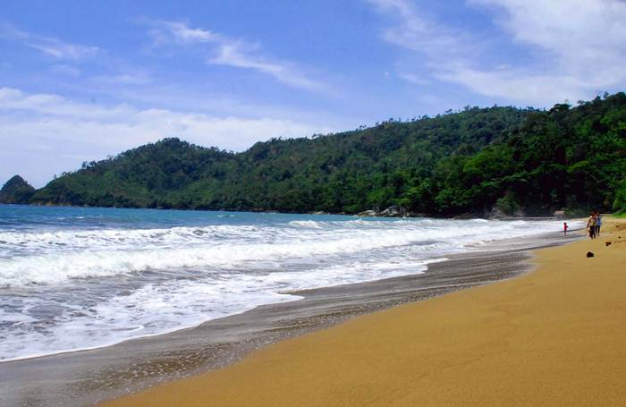
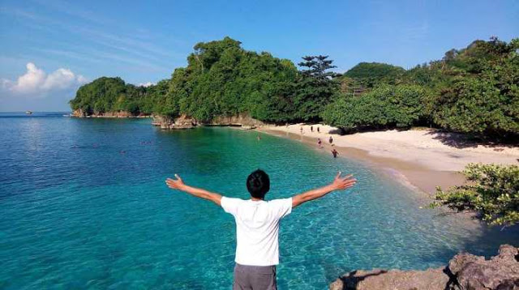
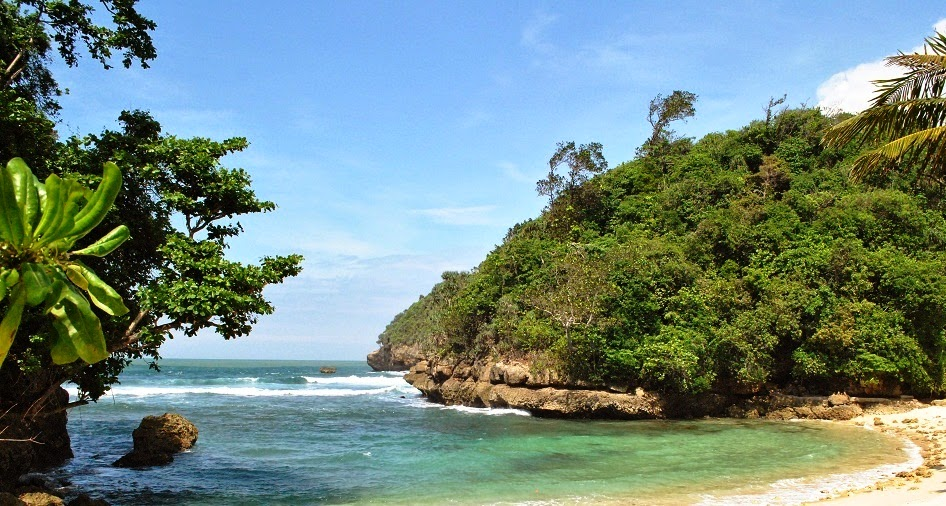
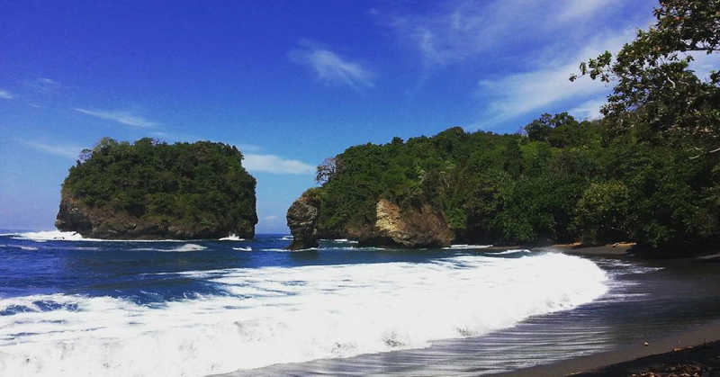

“Terpesona,” adalah kata pertama yang terlontar ketika wisatawan berkunjung ke Pantai Jonggring Saloko di Malang. Pantai yang memiliki nama yang sama dengan nama kawah di Gunung Semeru ini masih sepi dari pengunjung. Keunikan alam nan eksotis, gelombang besar khas Pantai Selatan, angin sejuk dan bersi begitu menghipnotis para pengunjung Pantai ini. Baca Selengkapnya ...


Pantai Kondang Buntung. Menyandang predikat sebagai surga wisata pantai di Jawa Timur, tentunya Malang Selatan bisa dipastikan mampu menampung keserbajenisan traveler penggila pantai. Banyak varian pantai yang memungkinkan siapa pun tetap manja dengan cara mereka. Salah satu diantaranya adalah Pantai Kondang Buntung yang terletak di Desa Tambakrejo, Sumbermanjing Wetan, Kabupaten Malang, Jawa Timur. Baca Selengkapnya ...

Pantai Kondang Merak menjadi salah satu pantai yang cukup terkenal di kalangan wisatawan. Secara administratif, pantai ini berada di Desa Sumberbening, Bantur. Begitu menginjakkan kaki di Pantai Kondang Merak, kamu akan melihat langsung keunikan pantai berupa lumut dan berbagai terumbu karang. Baca Selengkapnya ...

Perlahan tapi pasti Malang menjadi salah satu destinasi wisata Pantai nasional. Ini dikarenakan Kabupaten Malang memang memiliki banyak Pantai yang keindahannya tak kalah dari Pantai-Pantai tersohor lainnya. Satu persatu Pantai di Malang menjadi buah bibir dan ramai dikunjungi para wisatawan. Salah satunya adalah Pantai Lenggoksono. Baca Selengkapnya ...

Jika ingin melihat pesona pantai yang unik, cobalah datang ke Pantai Licin. Konon, kata “licin”, digunakan karena kondisi pantai yang cukup licin akibat banyaknya vegetasi lumut. Pasir Pantai Licin juga berbeda dari kebanyakan pantai di Malang memiliki pasir putih. Pasir di pantai ini berwarna hitam akibat muntahan lahar Gunung Semeru. Baca Selengkapnya ...